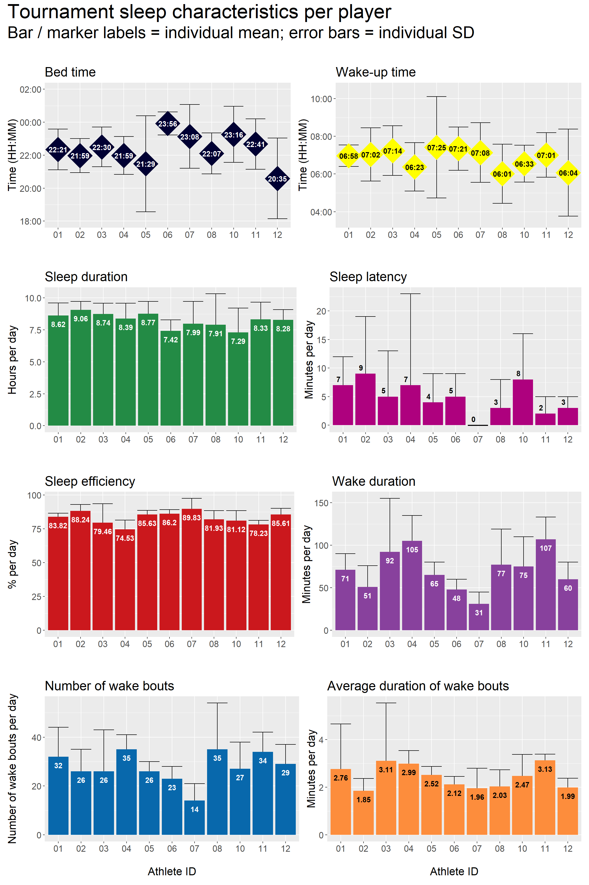

Chapter 5 Tournament sleep
5.1 Per player
5.1.1 Plots: Per day
From the plots below, an example interpretation is:
When examining sleep obtained during the tournament, athlete 02 recorded the highest sleep duration per night (mean = 9.06 h), while athlete 10 recorded the lowest sleep duration per night (mean = 7.29 h).

5.2 Team summary
5.2.1 Plots: Daily sleep
From the plots below, an example interpretation is:
On average, nightly sleep duration during the tournament period was greater than habitual sleep duration (habitual mean = 7.98 h), except for on March 18 (mean = 7.21 h) and March 21 (mean = 6.62 h).

5.2.2 Tables: Per day across tournament period
Table 5.1 below presents team-level summary statistics for tournament sleep, expressed as absolute values.
Example interpretation:
Over the course of the tournament period, athletes recorded a mean sleep duration of 8.33 h of per night (SD = 1.54 h).
| statistic | sleep_duration | sleep_duration_h | total_time_in_bed | sleep_latency | sleep_efficiency | wake_duration | wake_bouts_num | wake_bouts_avg_duration |
|---|---|---|---|---|---|---|---|---|
| Mean | 500 | 8.33 | 607 | 5 | 82.89 | 73 | 29 | 2.45 |
| SD | 92 | 1.54 | 120 | 8 | 7.74 | 38 | 12 | 1.10 |
Table 5.2 below presents team-level summary statistics for tournament sleep, expressed in values that are relative to each person’s habitual sleep characteristics (i.e., relative value = habitual minus tournament).
Example interpretation:
Over the course of the tournament period, athletes obtained 21 more minutes of sleep (SD = 106 min), as compared to their habitual sleep characteristics.
| statistic | sleep_duration_diff | sleep_duration_h_diff | total_time_in_bed_diff | sleep_latency_diff | sleep_efficiency_diff | wake_duration_diff | wake_bouts_num_diff | wake_bouts_avg_duration_diff |
|---|---|---|---|---|---|---|---|---|
| Mean | 21 | 0.35 | 39 | -3 | -2.13 | 11 | 0 | 0.28 |
| SD | 106 | 1.77 | 134 | 10 | 9.16 | 43 | 15 | 1.28 |